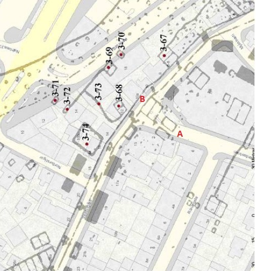
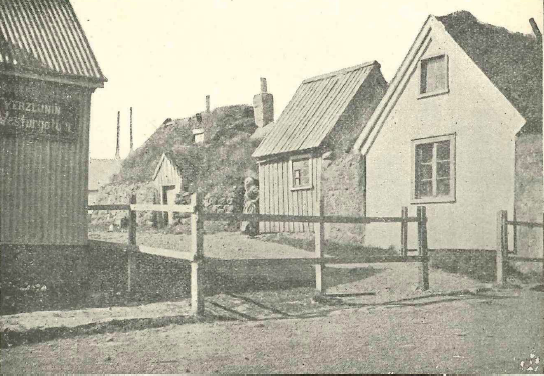
Dúkskot var byggt um 1800 í landi Hlíðarhúsa og stóð í núverandi
götustæði Garðastrætis við Vesturgötu. Fyrsti ábúandinn var
Jón Jónsson frá Dúki í Skagafirði og er bæjarnafnið dregið af því.
Dúkskot þótti meðal betri torfbæja í Reykjavík á 19. öld.
Kortið vinstra megin sýnir staðsetningu bæjarins árið 1887.
Á myndinni hægra megin sést torfbærinn Dúkskot ásamt Gróubæ.
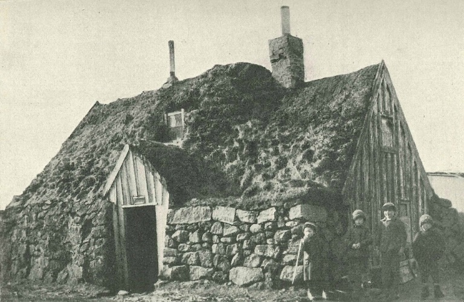
Ljósmynd af Dúkskoti úr dönsku ferðariti eftir Gustaf Funk.
Fjögur börn standa við bæinn og horfa á ljósmyndarann.
Líklegt er að myndin sé tekin nálægt aldamótunum 1900.
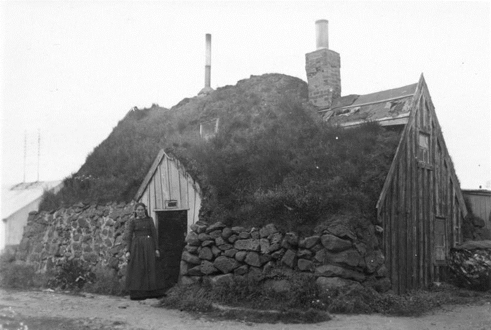
Ljósmynd tekin af þýskum ferðalangi. Þótt myndin sé merkt
1925 er líklegt að hún hafi verið tekin fyrr, áður en
Dúkskot var rifið um 1920. Kona stendur við inngang bæjarins
út að Garðastræti.
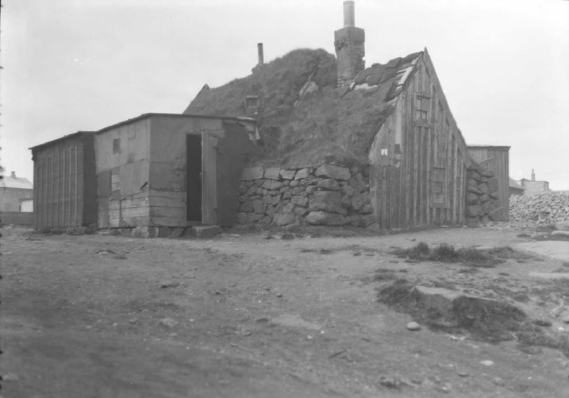
Jón Björnsson kaupmaður tók þessa ljósmynd skömmu áður
en Dúkskot var rifið.
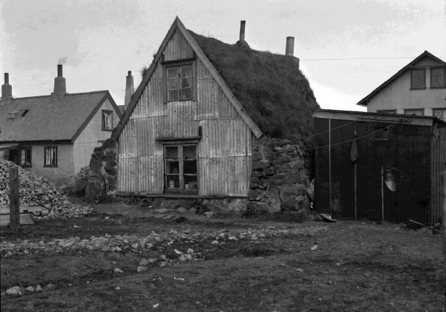
Á þessari mynd sést suðurgafl Dúkskots og hús við Vesturgötu
í bakgrunni.
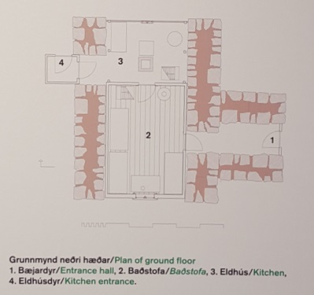
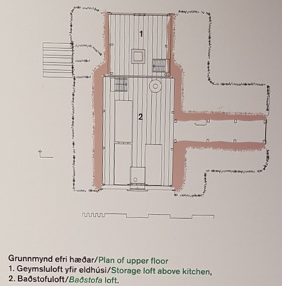
Grunnmyndir af Dúkskoti samkvæmt eldri virðingarlýsingum, sem
Hjörleifur Stefánsson arkitekt útbjó.
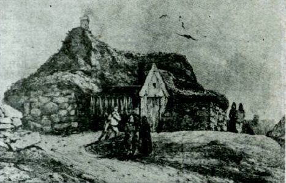
Teikning úr leiðangri Gaimards árið 1836. Talið er líklegt
að þetta sé Dúkskot.
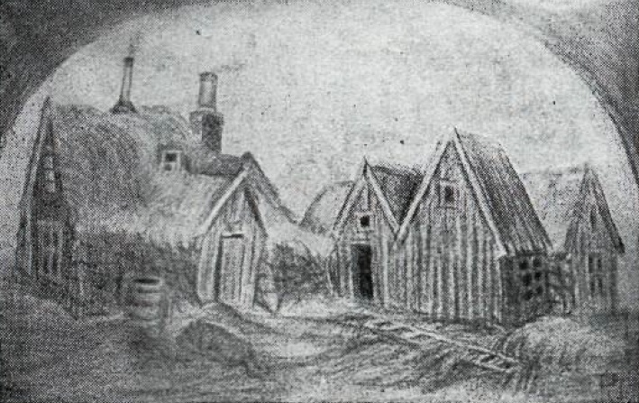
Teikning sem sýnir Dúkskot og Gróubæ undir lok 19. aldar.
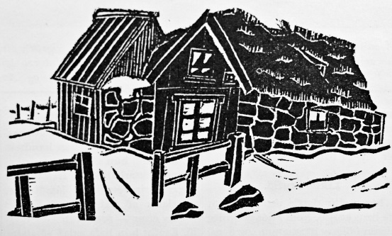
Dúkskots er oft minnst vegna morðmáls frá 1913 þegar
Júlíana Silfa Jónsdóttir myrti bróður sinn með rottueitri.
Morðið varð eitt fyrsta stóra æsifréttaefni Reykjavíkur.
Meðfylgjandi dúkrista birtist í Morgunblaðinu og telst
fyrsta fréttamynd sem birtist í íslensku dagblaði.